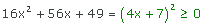
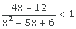

Ejercicios interactivos de inecuaciones de segundo grado y racionales
Escoge la solución correcta de cada una de las siguientes inecuaciones:
1x2 − 14x + 13 > 0
Igualamos el polinomio del primer miembro a cero y obtenemos las raíces de la ecuación de segundo grado.

Representamos estos valores en la recta real. Tomamos un punto de cada intervalo obtenido y evaluamos el signo en cada uno de estos intervalos:
P(0) = 02 − 14 · 0 + 13 > 0
P(2) = 22 − 14 · 2 + 13 < 0
P(14) = 142 − 14 · 14 + 13 > 0
La solución está compuesta por el intervalo o los intervalos que tengan el mismo signo que el polinomio.
Por tanto, la solución es:
S = (−∞, 1)∪(13, +∞).
24x2 − 20x + 25 < 0
Igualamos el polinomio del primer miembro a cero y obtenemos las raíces de la ecuación de segundo grado.
En este caso tenemos una raíz doble. Entonces, como , o lo que es lo mismo y todo número elevado al cuadrado es siempre positivo, entonces la inecuación no tiene solución.
S = ∅.
364x2 + 1 + 16x > 0
Igualamos el polinomio del primer miembro a cero y obtenemos las raíces de la ecuación de segundo grado.
En este caso tenemos una raíz doble. Entonces, , o lo que es lo mismo
Como un número elevado al cuadrado es siempre positivo la solución de la inecuación 64x2 + 1 + 16x > 0 son todos los números reales menos la raíz de la ecuación de segundo grado. Luego,
416x2 + 56x + 49 ≥ 0
Igualamos el polinomio del primer miembro a cero y obtenemos las raíces de la ecuación de segundo grado.
En este caso tenemos una raíz doble. Entonces, , o lo que es lo mismo, 
Como un número elevado al cuadrado siempre es positivo la solución de la inecuación 16x2 + 56x + 49 ≥ 0 son todos los números reales. Luego,
55x2 − 8 ≥ −6x
Pasando todos los términos al primer miembro de la inecuación obtenemos: 5x2 + 6x − 8 ≥ 0
Igualamos el polinomio del primer miembro a cero y obtenemos las raíces de la ecuación de segundo grado.
Representamos estos valores en la recta real. Tomamos un punto de cada intervalo obtenido y evaluamos el signo en cada uno de estos intervalos:
P(−3) = 5 · (−3)2 + 6 · (−3) − 8 > 0
P(0) = 5 · 02 + 6 · 0 − 8 < 0
P(2) = 5 · 22 + 6 · 2 − 8 > 0
La solución está compuesta por el intervalo o los intervalos que tengan el mismo signo que el polinomio.
Por tanto, la solución es:
S = ( −∞, −2]∪[4/5, +∞)
64x2 − 1 ≥ 0
Igualamos el polinomio del primer miembro a cero y obtenemos las raíces de la ecuación de segundo grado.
Representamos estos valores en la recta real. Tomamos un punto de cada intervalo obtenido y evaluamos el signo en cada uno de estos intervalos:
P(−1) = 4 · (−1)2 − 1 > 0
P(0) = 4 · 0 − 1 < 0
P(1) = 4 · 1 − 1 > 0
La solución está compuesta por el intervalo o los intervalos que tengan el mismo signo que el polinomio.
Por tanto, la solución es:
S = (−∞, −½]∪[½, +∞)
7x2 < −1 + 2x
Pasando todos los términos al primer miembro de la inecuación obtenemos:
x2 − 2x + 1 < 0
Igualamos el polinomio del primer miembro a cero y obtenemos las raíces de la ecuación de segundo grado.
En este caso tenemos una raíz doble, entonces:
Como un número elevado al caudrado siempre es mayor o igual que cero, la inecuación no tiene solución.
8x2 + x ≤ 6
Pasando todos los términos al primer miembro de la inecuación obtenemos: x2 + x − 6 ≤ 0
Igualamos el polinomio del primer miembro a cero y obtenemos las raíces de la ecuación de segundo grado.
Representamos estos valores en la recta real. Tomamos un punto de cada intervalo obtenido y evaluamos el signo en cada uno de estos intervalos:
P(−4) = (−4)2 + (−4) − 6 > 0
P(0) = 02 + 0 − 6 < 0
P(3) = 32 + 3 − 6 > 0
La solución está compuesta por el intervalo o los intervalos que tengan el mismo signo que el polinomio.

Por tanto, la solución es:
S = [−3, 2].
9
Pasamos el 5 al primer miembro, pasamos a común denominador la expresión resultante y efectuamos las operaciones:
Hallamos las raíces del numerador y del denominador:
Escogemos un punto de los tres intervalos que determinan las raíces del numerador y el denominador que son (−∞, −9), (−9, −5) y (−5, +∞) y evaluamos el signo:

Como tenemos un mayor o igual en la inecuación original tendremos que tener en cuenta las raíces del numerador a la hora de dar la solución, es decir, el −9 forma parte de la solución final. Hay que tener cuidado de excluir siempre las raíces del denominador, es decir, el −5 no forma parte de la solución final.
S = [−9, −5)
10
Pasamos el 1 al primer miembro, pasamos a común denominador la expresión resultante y efectuamos las operaciones:
Hallamos las raíces del numerador y del denominador:
 −x2 + 9x − 18 = 0
−x2 + 9x − 18 = 0
 x2 − 5x + 6 = 0
x2 − 5x + 6 = 0
Escogemos un punto de los cuatro intervalos que determinan las raíces del numerador y el denominador que son (−∞, 2), (2, 3), (3, 6) y (6, +∞) y evaluamos el signo:
Como tenemos un menor en la inecuación original no tendremos en cuenta las raíces del numerador.
S = (−∞, 2) ∪ (6, +∞)
Si tienes dudas puedes consultar la teoría